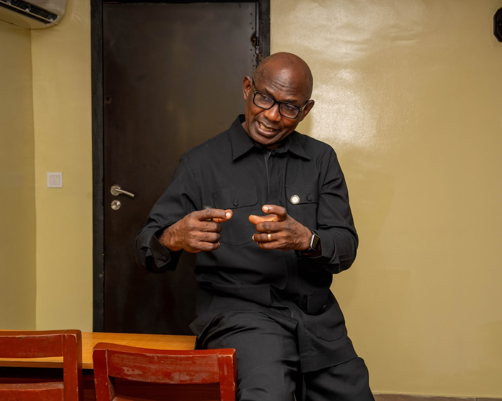
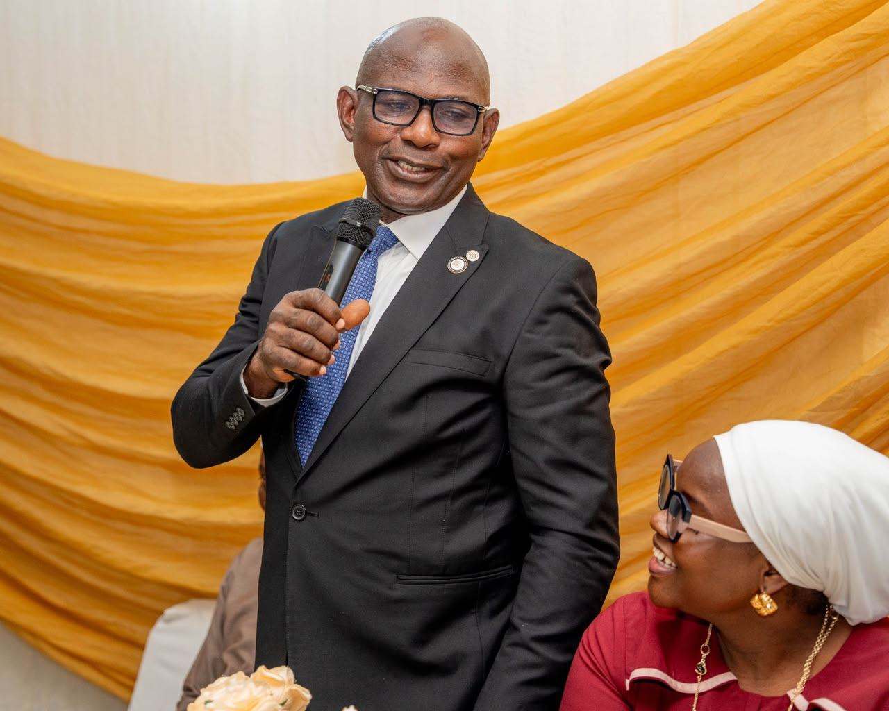

01
Strategy and organization design
Strategic direction, operating models, organizational structure and decision rights aligned to the work ahead.

Kingspride works with leaders to bring strategy, organization and people into alignment, so institutions can move through change with clarity and purpose.
Organizations rarely face a single, isolated challenge. A change in direction can affect structure, leadership, culture and capability all at once.
Kingspride brings these questions into one conversation. We work alongside boards, executives and institutional leaders to understand the real issue, make sound choices and help put those choices into practice.
Our work is grounded in senior experience across consulting, business and professional institutions, with a close understanding of the Nigerian and wider African context.
How we work with youWe bring strategy, organization and leadership into focus, then shape the right support around the needs of each institution.
Strategic direction, operating models, organizational structure and decision rights aligned to the work ahead.
People strategies, HR systems and policies that connect capability, accountability and performance.
Development and coaching that strengthen judgement, leadership practice and the ability to deliver.
Experienced counsel on governance, succession, organizational effectiveness and significant change.
Programmes, workshops and seminars for leaders, professional bodies and corporate academies, built around the realities of practice.

Every engagement starts with the people who know the institution best. We listen carefully, test what we hear and work with leadership to find a way forward that can hold in practice.
Listen to leaders and stakeholders. Learn the history, pressures and ambitions behind the brief.
Bring evidence and perspectives together to clarify what needs to change and why.
Develop a practical response that fits the institution, its strategy and its capacity.
Support leaders and teams as recommendations become decisions, habits and lasting capability.

Kingspride is led by Kayode Abe, a management consultant and organization development practitioner whose work spans global consulting, multinational business, financial institutions and professional bodies.
More than three decades of executive, advisory and faculty experience inform how each engagement is framed and delivered. Clients work directly with senior leadership throughout the assignment.
Teaching, writing and professional contribution keep our work connected to the questions leaders are asking now.
Contribution to Essentials of Banking, published by FITC and republished in 2022.
Kayode Abe · Professional learningFaculty and facilitator across Rome Business School Nigeria, FITC, IoD Nigeria, CIBN, ICAN, CBN Training School and NDIC Training Academy.
Professional education and leadership developmentThree perspectives on the choices shaping institutions today.

Questions leaders can ask about roles, judgement and capability before introducing AI across the organization.
Read article
How to recognize when structure and decision rights are slowing a sound strategy.
Read article
Why continuity depends on building leadership capacity well before a transition begins.
Read articleShare the question your organization is working through. We will arrange a confidential first conversation.
Contact Kingspride